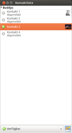
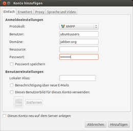
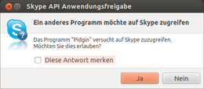
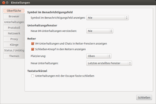
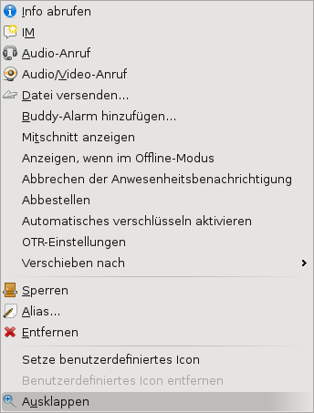

Pidgin
Dieser Artikel wurde für die folgenden Ubuntu-Versionen getestet:
Ubuntu 17.10 Artful Aardvark
Ubuntu 16.04 Xenial Xerus
Ubuntu 14.04 Trusty Tahr
Zum Verständnis dieses Artikels sind folgende Seiten hilfreich:
Pidgin  ist ein Instant Messenger, der es erlaubt, dasselbe Programm für verschiedene Instant-Messenger-Dienste zu nutzen. Ursprünglich ist das Projekt unter dem Namen Gaim geführt, jedoch wegen markenrechtlicher Probleme in Pidgin umbenannt worden. Erweiterungen ermöglichen es, die jeweiligen Protokolle für Pidgin zu implementieren.
ist ein Instant Messenger, der es erlaubt, dasselbe Programm für verschiedene Instant-Messenger-Dienste zu nutzen. Ursprünglich ist das Projekt unter dem Namen Gaim geführt, jedoch wegen markenrechtlicher Probleme in Pidgin umbenannt worden. Erweiterungen ermöglichen es, die jeweiligen Protokolle für Pidgin zu implementieren.
Unterstützte Protokolle¶

AIM
Bonjour
Gadu-Gadu
Novell Groupwise
MSN Messenger
MXit
MySpaceIM
SILC
Simple
Skype (Skype Client läuft)
Yahoo! Messenger (YIM)
Zephyr
Installation¶
Pidgin wird mittels des folgenden Pakets installiert [1]:
pidgin
 mit apturl
mit apturl
Paketliste zum Kopieren:
sudo apt-get install pidgin
sudo aptitude install pidgin
PPA¶
Adresszeile zum Hinzufügen des PPAs:
ppa:pidgin-developers/ppa
Hinweis!
Zusätzliche Fremdquellen können das System gefährden.
Ein PPA unterstützt nicht zwangsläufig alle Ubuntu-Versionen. Weitere Informationen sind der  PPA-Beschreibung des Eigentümers/Teams pidgin-developers zu entnehmen.
PPA-Beschreibung des Eigentümers/Teams pidgin-developers zu entnehmen.
Damit Pakete aus dem PPA genutzt werden können, müssen die Paketquellen neu eingelesen werden.
Nach dem Aktualisieren der Paketquellen erfolgt die Installation wie oben beschrieben.
Selbst kompilieren¶
Wie man Pidgin selbst kompiliert, steht unter Pidgin/Kompilieren.
Einrichten¶
Nach Abschluss der Installation kann das Programm bei Ubuntu-Varianten mit einem Anwendungsmenü über
"Internet -> Pidgin" oder alternativ mit dem Befehl pidgin gestartet werden [4]. Zum automatischen Starten nach Anmelden des Benutzers kann ein Eintrag im Autostart [5] hinzugefügt werden.

Konto¶
Um ein bestehendes Konto hinzuzufügen:
Protokoll auswählen (IRC, XMPP (Jabber) ... )
Benutzernamen, Passwort und Alias eingeben
Domain angeben (z.B. debianforum.de)
[X] Häkchen setzen, falls die Option "Passwort speichern" gewünscht ist.
Hinweis:
Alle Passwörter werden im Klartext in einer XML-Datei gespeichert und können dementsprechend von jedem, der darauf Zugriff hat, ausgelesen werden. Abhilfe schafft die Verwendung des GNOME-Keyring.
Buddy-Icon auswählen durch Anwählen von "Dieses Buddy-Icon für dieses Konto benutzen:" und (optional)
Speichern
Nun findet man das soeben eingerichtete Konto bei "Anmelden" und "Konten" wieder. Der Punkt "Konten" kann geschlossen werden. Um sich anzumelden, nur noch auf "Anmeldung" klicken, schon wird man verbunden.
Sollte für das gewünschte Protokoll kein Zugang bestehen, so kann man sich auf den jeweiligen Webseiten anmelden.
Als ein neues Fenster öffnet sich nun die Kontaktliste.
ICQ¶
Den Zugang für ICQ einrichten:
Unter "Konten -> Hinzufügen -> [Hinzufügen]" das Protokoll "ICQ" wählen
Benutzername:
ICQ-NummerangebenPasswort:
********Lokaler Alias:
Nicknameangeben (optional)Passwort speichern: an-/abwählen
Buddy-Icon auswählen durch Anwählen von "Dieses Buddy-Icon für dieses Konto benutzen:" und (optional)
Auf den Reiter "/Erweitert/" wechseln
"Benutze SSL" anwählen
"clientLogin benutzen" anwählen
"[Speichern]"
IRC¶
Für einen Internet Relay Chat-Zugang folgende Daten verwenden:
Unter "Konten -> Hinzufügen -> [Hinzufügen]" das Protokoll "IRC" wählen.
Server angeben z.B.
irc.freenode.netBenutzernamen (z.B. Foren-Spitzname), Passwort und Alias eingeben.
Häkchen setzen bei den Optionen "Passwort speichern" und "Autologin".
"[Speichern]"
Zum Anmelden (Login) nur noch auf "Anmeldung" klicken, schon wird man verbunden. Nach erfolgreichem Anmelden beginnt das Pidgin-Icon zu blinken. Ein Klick darauf und ein neues Fenster öffnet sich. Es empfiehlt sich, das Purple Plugin Pack zu verwenden (Paket pidgin-plugin-pack), das einige wichtige IRC-Funktionen bereitstellt. Weitere Informationen zu IRC
Wen Status-Meldungen des IRC-Servers stören, kann den Namen, unter dem die Meldungen laufen (z.B. "Nickserv"), unter "Werkzeuge -> Privatsphäre -> Nur unten stehende Benutzer Blockieren" eintragen. Man sollte aber bedenken, dass man so auch erwünschte Meldungen (beispielsweise über Service-Zeiten) blockiert.
XMPP¶
Um sich mit einem neuen oder bereits bestehenden XMPP-Zugang (Jabber) zu verbinden, genügen folgende Schritte:
Unter "Konten -> Hinzufügen -> [Hinzufügen]" das Protokoll "XMPP" wählen
Benutzer: z.B.
ForennickDomain: siehe XMPP/Server
Ressource: z.B:
Home,LaptopoderArbeitPasswort:
********Passwort speichern: an-/abwählen
Buddy-Icon auswählen durch Anwählen von "Dieses Buddy-Icon für dieses Konto benutzen:" und
Falls der Account noch nicht existiert, "Dieses neue Konto auf dem Server anlegen" anwählen.
Zugang "[Speichern]"
MSN¶
 Um sich mit dem MSN-Zugang von messenger.live.de
Um sich mit dem MSN-Zugang von messenger.live.de  zu verbinden, genügen folgende Schritte:
zu verbinden, genügen folgende Schritte:
Unter "Konten -> Hinzufügen -> [Hinzufügen]" das Protokoll "MSN" wählen
Benutzer:
MSN-Email(z.B: Mustermann@live.de)Passwort:
********Passwort speichern: an-/abwählen
Buddy-Icon auswählen durch Anwählen von "Dieses Buddy-Icon für dieses Konto benutzen:" und
Zugang "[Speichern]"
Yahoo Messenger¶
Um sich mit einem Yahoo-Konto zu verbinden, genügen folgende Schritte:
Unter "Konten -> Hinzufügen -> [Hinzufügen]" das Protokoll "Yahoo" wählen
Benutzer: Vollständige Mail-Adresse
Passwort:
********Passwort speichern: an-/abwählen
Buddy-Icon auswählen durch Anwählen von "Dieses Buddy-Icon für dieses Konto benutzen:" und
Zugang "[Speichern]"
QQ¶
In China ist das Chat-Protokoll QQ weit verbreitet. Immer mehr Chinesen nutzen Ubuntu Kylin, so daß der Wunsch nach QQ unter Linux groß ist. Bislang ist das benötigte Paket noch nicht in den offiziellen Paketquellen, deshalb muss man es über ein "Personal Packages Archiv" (PPA) installieren:
Adresszeile zum Hinzufügen des PPAs:
ppa:lainme/pidgin-lwqq
Hinweis!
Zusätzliche Fremdquellen können das System gefährden.
Ein PPA unterstützt nicht zwangsläufig alle Ubuntu-Versionen. Weitere Informationen sind der PPA-Beschreibung des Eigentümers/Teams lainme zu entnehmen.
Damit Pakete aus dem PPA genutzt werden können, müssen die Paketquellen neu eingelesen werden.
Anschließend kann folgendes Paket installiert werden:
pidgin-lwqq (ppa)
mit apturl
Paketliste zum Kopieren:
sudo apt-get install pidgin-lwqq
sudo aptitude install pidgin-lwqq
Nach einem Neustart von Pidgin lässt sich QQ nun nutzen.
Unter "Konten -> Hinzufügen -> [Hinzufügen]" das Protokoll "Webqq" wählen
Benutzer:
QQ-NummerPasswort:
********Passwort speichern: an-/abwählen
Buddy-Icon auswählen durch Anwählen von "Dieses Buddy-Icon für dieses Konto benutzen:" und
Zugang "[Speichern]"
Will man sich einloggen, wird zuvor ein Captcha abgefragt.
Zeroconf/Avahi¶
Wie einige andere XMPP-Clients auch, bietet Pidgin die Möglichkeit, über Avahi auch ohne Server bzw. Internetverbindung mit Kontakten im LAN zu chatten. Dabei nutzt Pidgin das sogenannte Zeroconf-Protokoll, um potentielle Chatpartner zu finden. Das funktioniert völlig unabhängig von der Kontaktliste. Man kann also alle Benutzer im lokalen Netz automatisch "sehen", ohne irgendwelche JIDs irgendeinem Raster hinzuzufügen.
Zeroconf stammt ursprünglich von der Firma Apple, deren Implementation "Bonjour" heißt. Deswegen wird das Protokoll in Pidgin auch so genannt. Um es zu nutzen, muss man also ein neues Bonjour-Konto einrichten. Die einzigen Daten, die man dabei unbedingt eingeben muss, heißen Benutzer und Rechnername, wobei man aber frei wählen kann.
Unter dem neu erstellten Konto erscheinen nun automatisch alle anderen lokalen Benutzer, die dieses Protokoll ebenfalls aktiviert haben. Mit diesen kann man nun ganz normal chatten, wie man es bei XMPP (Jabber) gewöhnt ist. Auch Dateiübertragungen funktionieren.
Leider unterstützen noch nicht alle XMPP-Clients dieses Protokoll. Andere unterstützende Programme sind Gajim und iChat von Apple.
Hinweis:
Unter Verwendung eines Bonjour-Kontos können keine Dateien größer als 2 GiB übertragen werden.
XMPP-Transport nutzen¶
Um unter Pidgin die Transports eines XMPP-Servers nutzen zu können, müssen diese erst gefunden werden, um sich bei ihnen registrieren zu können.
Standardmäßig ist die XMPP-Dienstsuche in Pidgin deaktiviert, und man muss sie erst über "Werkzeuge -> Plugins" aktivieren. Ist dies geschehen, kann man unter "Werkzeuge -> XMPP-Dienstsuche" den Server des jeweiligen Kontos nach Diensten durchsuchen und sich mit einem Klick auf "Registrieren" anmelden.
XMPP-Verschlüsselung¶
Um den XMPP-Chat zu verschlüsseln, muss das OTR-Plugin installiert und unter "Werkzeuge -> Erweiterungen -> Off-the-Record Messaging" aktiviert werden. Nun befindet sich im Gesprächsfenster eine OTR-Schaltfläche. Bei der ersten Nutzung wird automatisch ein Schlüssel generiert. Während das Fenster erscheint, dass der Schlüssel generiert wird, sollte man nicht geduldig warten, sondern einfach den Rechner weiter nutzen, da der Schlüssel durch die eigene Aktivität zufallsgeneriert wird. Verschlüsselt werden kann natürlich nur, wenn beide Seiten ein OTR-fähiges Programm nutzen. Ist die Verschlüsselung einmal eingerichtet, wird die Verschlüsselung in Gesprächen immer automatisch aktiviert.
Hinweis:
Audio-/Video-Anrufe werden nicht verschlüsselt. Auch Offline-Text-Nachrichten sind von der Verschlüsselung ausgenommen, da zur Verschlüsselung beide Seiten gleichzeitig online sein müssen. Ob die Verschlüsselung gerade aktiv ist, erkennt man an der OTR-Schalftläche im Gesprächsfenster.
Skype-Protokoll hinzufügen¶
Hinweis:
Um Skype via Pidgin nutzen zu können, muss Skype installiert sein. Zum Chatten mit Pidgin muss Skype gestartet und verbunden sein.
Man installiert aus den Paketquellen das Plugin pidgin-skype, welches das Chatten über Pidgin (oder Empathy und andere Instant Messenger, die libpurple verwenden) erlaubt.
pidgin-skype (multiverse)
mit apturl
Paketliste zum Kopieren:
sudo apt-get install pidgin-skype
sudo aptitude install pidgin-skype
Einrichtung¶
Man schließt Pidgin, startet Skype und meldet sich mit seinen Nutzerdaten an. Ist man mit Skype verbunden, startet man Pidgin und wechselt in die Kontenübersicht: 
Unter "Konten -> Hinzufügen -> [Hinzufügen]" das Protokoll "Skype" wählen
Skype-Benutzername, Skype-Passwort (nur bis Ubuntu 9.10) und frei wählbaren Alias eingeben
Buddy-Icon auswählen durch anwählen von "Dieses Buddy-Icon für dieses Konto benutzen:" und
Im Reiter "Erweitert" kann man weitere Einstellungen seinen Wünschen entsprechend aktivieren.
"[Speichern]"
Kurz darauf fragt Skype, ob Pidgin auf Skype zugreifen darf (siehe nebenstehendes Bild), was man erlauben muss, und beendet Pidgin.
Man startet nun Pidgin erneut, um die Skype-Kontakte in der Buddy-List sichtbar zu machen (Gruppe Skype).
Testanruf für Skype-Plugin¶
Um zu prüfen, ob Telefonieren mit Pidgin möglich ist, kann man einen neuen Kontakt ("Buddy") anlegen, indem man als Name echo123 angibt. In der Liste erscheint dies als "Echo / Sound Test Service".
Steam-Protokoll hinzufügen¶
pidgin-opensteamworks nutzt Steams Mobile-API, daher muss Steam selbst weder im Hintergrund laufen noch überhaupt installiert sein. Auch ein Login über mehrere Geräte gleichzeitig ist möglich. Wie im Steam-Chat im normalen Steam-Client sieht man, in welchem Spiel sich gerade die Freunde befinden.
Das entsprechende Plugin  ist auf der Projektseite von pidgin-openstreamworks zu finden. Je nachdem, ob es sich um ein 32-bit- oder 64-bit-System handelt, muss die entsprechende .so-Datei heruntergeladen werden. Nach abgeschlossenem Download ist diese in den Ordner ~/.purple/plugins zu verschieben und Pidgin neu zu starten.
ist auf der Projektseite von pidgin-openstreamworks zu finden. Je nachdem, ob es sich um ein 32-bit- oder 64-bit-System handelt, muss die entsprechende .so-Datei heruntergeladen werden. Nach abgeschlossenem Download ist diese in den Ordner ~/.purple/plugins zu verschieben und Pidgin neu zu starten.
Ersatzweise (falls das Plugin nicht funktioniert) gibt es steampurple , das genauso installieren wird.
Einrichtung¶
Man wechselt in die Kontenübersicht:
Unter "Konten -> Hinzufügen -> [Hinzufügen]" das Protokoll "Steam" wählen
Steam-Benutzername, Steam-Passwort und optional frei wählbaren Alias eingeben
"[Hinzufügen]"
Sofern Steam Guard aktiviert ist, erscheint nun ein Fenster, um den Steam-Guard-Code einzugeben. Dazu wartet man auf die automatisch versendete E-Mail vom Steam-Support und trägt nach Empfang den Code entsprechend ein.
Der Steam-Guard-Code kann nachträglich über den Reiter "Erweitert -> Steam Guard Code" angepasst werden.
XFire-Protokoll hinzufügen¶
Damit man über Pidgin auch mit Spiel-Kollegen aus dem XFire - Netzwerk kommunizieren kann, gibt es das Plugin gFire , das direkt von der Entwicklerseite als Paket[1] heruntergeladen werden kann.
Hinweis!
Zusätzliche Fremdquellen können das System gefährden.
Nach der Installation und einem Neustart von Pidgin kann man sich wie folgt mit seinem Benutzerkonto ("account") bei Xfire anmelden:
Unter "Konten -> Hinzufügen -> [Hinzufügen]" das Protokoll "Xfire" wählen
Xfire-Benutzername, Xfire-Passwort und frei wählbaren Alias eingeben.
Im Reiter "Erweitert" kann man weitere Einstellungen seinen Wünschen entsprechend aktivieren.
"[Speichern]"
Hinweis: Um dieses Plugin benutzen zu können, muss ein Nutzerkonto auf XFire vorhanden sein.
Sametime¶
Wer bei der IBM gearbeitet haben, ist mit dem Produkt IBM Sametime vertraut. Sametime ist ein sehr reichhaltiges IM-Protokoll, dass zusätzlich zum Standard- und Gruppen-Chat auch Dateiübertragung, Bildschirmfreigabe, Anrufe und Online-Meetings erlaubt. Es ist sehr nützlich, da die gesamte Firma Sametime wegen der Integration in Lotus Notes nutzten kann und bei den meisten IBM-Angestellten Sametime immer dann aktiviert wird, wenn sie ihren Email-Clients starten.
Da Samtime nur an Unternehmen als Teil der Lotus Suite verkauft wird, stellt die IBM mit mehr als 420.000 Mitarbeitern selbst die größte Nutzerbasis dar.
Einrichtung:
Eine IBM ID
holen, falls noch nicht vorhanden ist. Die Erfahrung zeigt, dass man einige evtl. schon vorhandene IBM-IDs auch für das Sametime-Gateway nutzen kann (z. B. von Passport Advantage), andere dagegen nicht (developerWorks). Man sollte es einfach testen.Im Pidgin ein neues Konto anlegen: Unter "Konten -> Konten verwalten -> Hinzufügen " das Protokoll "Sametime" wählen.
Benutzer:IBM ID
Server:extst.ibm.com
Passwort: von IBM ID (optional, wird späner nachgefragt)
Lokalen Alias: frei wählbar (optional)
Im Reiter "Erweitert":
Port:80
"Client-Identität verbergen" anklicken. Im Reiter "Proxy" sind normalerweise keine Veränderungen nötig, bei Bedarf - anpassen.Sametime-Konto(s) konfigurieren. Ohne diesen Schritt wird die Fehlermeldung "
Version mismatch" ausgegeben. Pidgin beenden, dann die Datei~/.purple/accounts.xmlsichern und in einem Texteditor öffnen. Für ein Sametime-Konto soll die Sektion "settings" die folgenden Einträge beinhalten:<settings> <setting name='client_major' type='int'>30</setting> <setting name='port' type='int'>80</setting> <setting name='force_login' type='bool'>0</setting> <setting name='client_id_val' type='int'>4098</setting> <setting name='server' type='string'>extst.ibm.com</setting> <setting name='client_minor' type='int'>8511</setting> <setting name='fake_client_id' type='bool'>1</setting> </settings>
Jetzt soll man in der Lage sein sich mit dem IBM internen Sametime Server zu verbinden. Dabei können nur die IBM'er angesprochen werden, die in ihrem Sametime eine zusätzliche "Server Community"
mit dem Server extst.ibm.comund Port80angelegt haben und bei dieser "Server Community" angemeldet sind.
Um IBM-Kontakte eintragen zu können, sind die gültigen Email-Adressen (IBM IDs) notwendig. Die internen IBM Email-Adressen kann man im IBM Adressbuch finden.
Es ist auch möglich, mit den nicht-IBM'er zu chatten, die das Sametime Gateway über ihre Clients nutzen, darunter auch den IBM Sametime Web-Client
Twittern mit Pidgin¶
Um Mikroblogging-Dienste wie Twitter oder Identi.ca mit Pidgin nutzen, also Nachrichten empfangen oder absenden zu können, muss das folgende Plugin installiert werden [1]:
pidgin-microblog (universe)
mit apturl
Paketliste zum Kopieren:
sudo apt-get install pidgin-microblog
sudo aptitude install pidgin-microblog
Hinweis:
Nach der Installation ist ein Neustart von Pidgin erforderlich.
Die Einrichtung für ein bestehendes Twitter-Konto erfolgt dann beispielsweise so:
Unter "Konten -> Hinzufügen -> [Hinzufügen]" das Protokoll "Twitter" wählen
Twitter-Benutzername, Twitter-Passwort und frei wählbaren Alias eingeben
Im Reiter "Erweitert" kann man weitere Einstellungen entsprechend den eigenen Wünschen aktivieren
"[Speichern]"
Einen Buddy hinzufügen¶
Sofern man jemanden kennt, der z.B. einen XMPP-Zugang hat, so kann man diesen wie folgt hinzufügen: "Buddies -> Buddy hinzufügen...". Nun die bekannten Daten eingeben.
Status¶
Der Status ist entweder im "Systray" oder in der geöffneten Buddy-Liste zu erkennen. Sie zeigt den eigenen Status und den der Buddies an. Es gibt im Systray oder in der Buddy-Liste folgende Status als Standard zur Auswahl:
| Status | |
| Verfügbar sein für alle Buddies | |
| Abwesend - z.B. nach längerer Inaktivität | |
Persönliche Abwesenheitsnachricht z.B. Ich bin gerade nicht hier. | |
| Beschäftigt | |
| Unsichtbar für andere Buddies | |
| Trennung der Verbindung / nicht im Chat | |
Weiterhin kann man dem ausgewählten Status auch noch eine Meldung hinzufügen, dazu ist diese einfach im Textfeld darunter einzugeben. Wenn kein Textfeld vorhanden ist, muss das Auswahlmenü geöffnet und der gewollte Status noch einmal ausgesucht werden. Ein banales Beispiel: Man könnte "Abwesend" mit der Meldung darunter "Bin gerade beim Lösen eines schwierigen Linux-Problems." verwenden.
Jede Meldung wird im Status-Menü gespeichert. Um Meldungen wieder zu löschen, muss man lediglich die rechte Maustaste auf einer Meldung im Statusmenu gedrückt halten und dann Entf eingeben. Über das erscheinende Abfragefenster kann die Meldung entfernt werden.
Außerdem kann man auch weitere Status mittels "Neuer Status..." im bereits erwähnten Menü erstellen und über "Gespeicherter Status" verwalten.
Automatisches Ausloggen bei Standby¶
Wenn man den Computer in den Ruhezustand ("standby") schickt, meldet sich Pidgin vorher nicht ab ("logout"), so dass man je nach Server noch ca. 15 Minuten online erscheint. Nachrichten, die in diesen Zeitraum kommen, gehen verloren (icq/jabber/irc). Damit sich Pidgin vor dem Ruhezustand automatisch abmeldet und nachher wieder anmeldet ("login"), kann man folgendes Script 00pidgin in /etc/pm/sleep.d/ erstellen (man ersetze dabei "user" mit dem Benutzernamen; die Statusnachricht bleibt unberührt):
1 2 3 4 5 6 7 8 9 10 11 12 13 14 | #!/bin/sh # # 00pidgin: set offline/online status case "$1" in hibernate|suspend) DISPLAY=:0 su -c 'purple-remote setstatus?status=offline' user ;; thaw|resume) DISPLAY=:0 su -c 'purple-remote setstatus?status=available' user ;; *) exit $NA ;; esac |
Einstellungen¶
 Einige sinnvolle Erweiterungen, die aktiviert werden sollten:
Offline-Buddys anzeigen¶
Normalerweise werden die Offline-Buddys ausgeblendet. Um dies zu ändern, die Option "Buddys -> Zeige Offline-Buddys" aktivieren.
Tonausgabe (de)aktivieren¶
In manchen Situationen ist es angenehmer, die Tonausgabe zu deaktivieren. Dies kann man unter "Werkzeuge -> Einstellungen -> Klänge" tun und ist besonders empfehlenswert, wenn man z.B. neben dem Chatten noch ein anderes Programm laufen hat, welches die Tonausgabe blockiert. Schließt man dieses Programm, werden alle bis dahin eingegangenen Meldungen abgespielt. Alternativ kann man deswegen die Klänge abschalten.
Gesprächsmitschnitt¶
Um die Gespräche mit den unterschiedlichen Chatpartnern ggf. nochmals nachlesen zu können, empfiehlt es sich, bei "Werkzeuge -> Einstellungen -> Mitschnitt" als Format "einfacher Text" zu wählen und beim "Nachrichtenmitschnitt" alle Häkchen zu setzen. Nun wird im Homeverzeichnis ein Ordner ~/.purple/logs erstellt. Hier findet man alle Protokolle fein säuberlich sortiert nach den Kriterien:
Dienst
benutztes Konto
Gesprächspartner und
Gesprächsmitschnitt
Privatsphäre¶
Um Einstellungen an der Privatsphäre vorzunehmen, "Werkzeuge -> Privatsphäre" anwählen. Nun das gewünschte Konto wählen und zwischen den Einstellungsoptionen wählen:
Allen Benutzern erlauben, mich zu kontaktieren
Nur den Benutzern in meiner Buddy-Liste erlauben, mir Nachrichten zu senden
Erlaube nur den unten stehenden Benutzern, mir eine Nachricht zu senden
Blockiere alle Benutzer
Blockiere nur unten stehende Benutzer
Chatroom¶
Um mit vielen Menschen über das ein oder andere Thema zu sprechen, kann man Chatrooms aufsuchen. In Pidgin geht man wie folgt vor: "Werkzeuge -> Chaträume -> Liste abrufen". Nun einen Raum, z.B. ubuntu-de, auswählen und "Betreten". Möchte man diesen Chatraum der eigenen Liste hinzufügen, wählt man vorher "Chat hinzufügen" aus. Dies funktioniert nur bei Zugängen von: Y!M, XMPP (Jabber) und IRC.

Audio-/Videochat via XMPP¶
Kontakt mit Rechtsklick auswählen
Audio-Anruf bzw. Audio/Video-Anruf auswählen (nur verfügbar bei Kontakten, bei denen es auch möglich ist)
Plugins¶
Pidgin verfügt über eine Reihe von Erweiterungen, die teilweise bei Bedarf nachzuinstallieren sind. Plugins findet man unter "Werkzeuge -> Plugins". Diese können im nun erscheinenden Fenster (de)aktiviert werden. Neben den Basiserweiterungen stehen unter anderem diese Plugins zur Verfügung:
pidgin-otr (universe, Das Off-the-Record Messaging Plugin bietet Verschlüsselung. Das OTR-Plugin steht für viele weitere IM-Programme zur Verfügung, wie z.B. Miranda, Trillian, Kopete, Psi und Adium))
pidgin-encryption (universe, Verschlüsselung)
pidgin-extprefs (universe, Eine Reihe von Plugins, um das Verhalten und die Darstellung von Pidgin zu ändern.)
pidgin-libnotify (universe, Popups beim Empfang von Nachrichten über den Benachrichtigungsdienst von GNOME)
pidgin-guifications (universe, Popups beim Empfang von Nachrichten)
pidgin-hotkeys (universe, Die Hotkeys individuell einstellen)
pidgin-librvp (universe, MS Exchange RVP Instant Messaging Plugin)
pidgin-blinklight (universe, Lässt die LEDs ThinkLight eines IBM/Lenovo ThinkPad bei neuen Nachrichten blinken)
pidgin-plugin-pack (universe, 30 weitere zum Teil nützliche Plugins)
pidgin-musictracker (universe, Aktueller Status deines Musik Players anzeigen lassen)
mit apturl
Paketliste zum Kopieren:
sudo apt-get install pidgin-otr pidgin-encryption pidgin-extprefs pidgin-libnotify pidgin-guifications pidgin-hotkeys pidgin-librvp pidgin-blinklight pidgin-plugin-pack pidgin-musictracker
sudo aptitude install pidgin-otr pidgin-encryption pidgin-extprefs pidgin-libnotify pidgin-guifications pidgin-hotkeys pidgin-librvp pidgin-blinklight pidgin-plugin-pack pidgin-musictracker
Pidgin-LaTeX¶
Für LaTeX-Liebhaber existieren verschiedene Plugins, die LaTeX-Code rendern und als Bild ins Chat-Fenster einfügen. Informationen und Installationshinweise finden sich im Archiv.
Pidgin-GNOME-Keyring¶
Pidgin speichert die Passwörter im Klartext. Um das zu vermeiden, kann man das Pidgin-GNOME-Keyring Plugin installieren und die Passwörter damit stattdessen im GNOME Schlüsselbund hinterlegen.
Dazu muss folgendes Paket installiert werden: [1]
pidgin-gnome-keyring (universe, ab 15.10)
mit apturl
Paketliste zum Kopieren:
sudo apt-get install pidgin-gnome-keyring
sudo aptitude install pidgin-gnome-keyring
Für ältere Ubuntu-Versionen steht ein PPA für die Installation dieses Pakets zur Verfügung.
Adresszeile zum Hinzufügen des PPAs:
ppa:pidgin-gnome-keyring/ppa
Hinweis!
Zusätzliche Fremdquellen können das System gefährden.
Ein PPA unterstützt nicht zwangsläufig alle Ubuntu-Versionen. Weitere Informationen sind der PPA-Beschreibung des Eigentümers/Teams pidgin-gnome-keyring zu entnehmen.
Damit Pakete aus dem PPA genutzt werden können, müssen die Paketquellen neu eingelesen werden.
KDE-/KWallet-Integration¶
Da Pidgin eingegebene Passwörter in Klartext speichert, können diese von jedem, der Zugriff auf den PC hat, recht einfach ausgelesen werden. Mit Hilfe eines Plugins kann man, sofern man Pidgin unter KDE verwendet, die Passwörter in der KDE-Brieftasche KWallet speichern lassen. Dazu benötigt man das Libpurple KWallet Plugin . Voraussetzung ist die Installation [1] des folgenden Pakets:
libnet-dbus-perl
mit apturl
Paketliste zum Kopieren:
sudo apt-get install libnet-dbus-perl
sudo aptitude install libnet-dbus-perl
Anschließend kann man das Plugin einfach mit den folgenden Befehlen [2] in das Plugin-Verzeichnis von Pidgin herunterladen:
mkdir ~/.purple/plugins cd ~/.purple/plugins wget http://gitorious.org/libpurple-kwallet-plugin/libpurple-kwallet-plugin/blobs/raw/master/libpurple_kwallet_plugin.pl
Zuletzt muss man alle gespeicherten Passwörter in den Pidgin-Einstellungen löschen, die Häkchen unter "Passwort speichern" entfernen und Pidgin neustarten. Nun gibt man nacheinander die benötigten Passwörter ein ("Passwort speichern" nicht aktivieren) und sie werden automatisch von KWallet gespeichert.
Pidgin-Facebook¶
Die Nutzung des Facebook Messengers ist über das externe Plug-in purple-facebook möglich. Je nach Ubuntu-Version ist das Plug-in über eine Fremdquelle verfügbar , ansonsten muss man das Plug-in gemäß der Anleitung selber kompilieren.
Pidgin-Whatsapp¶
Hinweis:
Die Entwicklung von whatsapp-purple wurde mittlerweile eingestellt, weswegen das Plugin unter Umständen nicht mehr funktioniert.
Mit der steigenden Beliebtheit von WhatsApp mag manch einer in die Versuchung kommen, dieses in Pidgin einzubinden. Eine Anleitung ist im Pidgin-im.de-Wiki zu finden. Allerdings gibt es eine Stolperfalle: Wer ein bestehendes Konto auf dem Rechner nutzt, ist mobil nicht mehr per WhatsApp erreichbar – der Dienst erlaubt immer nur ein aktives Gerät pro Telefonnummer.
Das lässt sich leicht rückgängig machen, indem man WhatsApp auf dem Smartphone neu aktiviert, dann ist man jedoch am Rechner nicht mehr erreichbar. Bestehende WhatsApp-Nutzer sollten daher nach Möglichkeit eine andere Telefonnummer bei der PC-Aktivierung angeben als die bereits mobil genutzte. Dann bittet man die wichtigsten Gesprächspartner einfach, Nachrichten als Gruppenchat an alle hinterlegten (eigenen) Nummern zu schicken. Auf diesem Weg kann man WhatsApp quasi parallel auf dem Smartphone und auf dem Rechner nutzen (Quelle: WhatsApp auf PC, Mac und Linux nutzen ).
Optische Anpassungen¶
Startbildschirm ändern¶
Um den Startbildschirm den individuellen Bedürfnissen anzupassen, benötigt man ein PNG-Bild mit folgenden Maßen: Breite 331 px, Höhe 90 px.
Man kann im Internet passende Bilder herunterladen oder die Beispielbilder nutzen, die hier zu finden sind. Das gewünschte Bild herunterladen und umbenennen in logo.png. Alternativ kann GIMP genutzt werden.
Danach öffnet man den Ordner, in dem sich das Logo befindet, und gibt im Terminal [2] zwei Befehle ein:
Eine Sicherheitskopie des alten Logos anlegen:
sudo cp /usr/share/pixmaps/pidgin/logo.png /usr/share/pixmaps/pidgin/logo.png_old 1. Das neue Logo kopieren: {{{#!vorlage Befehl sudo cp logo.png /usr/share/pixmaps/pidgin
Buddy-Liste als Screenlet¶
Die sehr schöne Möglichkeit, sich die Buddy-Liste auch direkt auf dem Desktop anzeigen zu lassen, bietet das Pidgin-Screenlet .
Nach der Installation des Hauptprogramms Screenlets wird das Pidgin-Screenlet heruntergeladen und entpackt. Den dabei entstandenen Ordner "Pidgin" dann in den versteckten Ordner ~/.screenlets/ kopieren. Jetzt kann Pidgin, genau wie alle anderen Screenlets, über den Screenlets Manager aufgerufen und konfiguriert werden. Es existieren zur Zeit noch fünf weitere Themes für Pidgin, um die Buddy-Liste im gewünschten Design anzeigen zu lassen.
Themen ändern¶
Man kann das Smiley-, Kontaktlisten-, Klang- und Status-Symbolthema anpassen. Ändern kann man die Themen unter "Werkzeuge -> Einstellungen -> Themen". Es können auch weitere Themen heruntergeladen (s. Links) und installiert werden. Dafür entpackt [3] man heruntergeladene Smileythemen einfach in das Verzeichnis ~/.purple/smileys und alle anderen in ~/.purple/themes. Sollen die Themen für alle Nutzer des Rechners verfügbar sein, entpackt man sie mit Root-Rechten [10] nach /usr/share/pixmaps/pidgin/.
Buddy Icon¶
Buddy Icons sind kleine Bilder, ähnlich wie die Avatare im Forum. Um diese zu verwenden, wählt man "Konten -> Hinzufügen / Ändern". Nun das Konto auswählen und "Bearbeiten" anwählen. anwählen und das gewünschte Bild auswählen. Dieses sollte jedoch nicht größer als 4 kB sein und als .gif, .jpg oder .bmp vorliegen. Abschließend "Speichern".
Tastenkürzel¶
| Chatfenster | |
| Strg + ↑ | letzte gesendete Zeile wieder aufrufen |
| Strg + M | neuen Gesprächs-Tab öffnen (nach Eingabe des Empfängers) |
| Strg + W | aktiven (Gesprächs-)Tab schließen |
| Kontaktliste | |
| Strg + B | Buddys hinzufügen |
| Strg + A | Konten hinzufügen / ändern |
| Strg + P | Einstellungen |
| Strg + T | Dateiübertragungen |
| Strg + Q | Programm beenden |
Tastenkürzel für Senden ändern¶
Um zusätzlich zu Enter mit Alt + S senden zu können, fügt man folgenden Code in die .purple/gtkrc-2.0 im Homeverzeichnis ein [6]:
binding "my-bindings"
{
bind "<alt>s" { "message_send" () }
}
widget "*pidgin_conv_entry" binding "my-bindings" Wenn die Tastenbelegung schon belegt ist, bei der englischen Pidgin-Version z.B. durch "Smile!", muss die Werkzeugleiste für Formatierungen unter "Optionen" ausgeblendet werden.
Rechtschreibkorrektur¶
Als Vorgabe sind lediglich die Korrektur für deutsche und englische Sprache zu finden. Um eine weitere Sprache hinzuzufügen, muss das entsprechende myspell-Paket installiert [1] werden:
myspell-es (spanische Sprache)
myspell-fr (französische Sprache)
myspell-it (italienische Sprache)
myspell-nl (niederländische Sprache)
myspell-pl (polnische Sprache)
myspell-ru (russische Sprache)
mit apturl
Paketliste zum Kopieren:
sudo apt-get install myspell-es myspell-fr myspell-it myspell-nl myspell-pl myspell-ru
sudo aptitude install myspell-es myspell-fr myspell-it myspell-nl myspell-pl myspell-ru
Nach dessen Installation und Neustart Pidgins ist im Kontextmenu des Eingabefeldes die entsprechende Sprache zu wählen. Weitere Sprachpakete sind in den Paketquellen zu finden.
Speicherort¶
Möchte man isoliert seine Konto- oder Buddy-Einstellungen sichern bzw. transferieren, findet man diese im Verzeichnis ".purple"
Zertifikate im Verzeichnis "certificates"
Mitschnitte im Verzeichnis "logs"
das eigene Konto unter "accounts.xml"
die Kontakte Buddies unter "blist.xml"
sowie weitere Einstellungen u.a. zu OTR.
Möchte man beispielsweise seine Mitschnitte auch unter Windows verfügbar haben, empfiehlt es sich, einen Link zu der zuvor in Ubuntu eingebundenen Windows-Partition einzurichten. Dazu gibt man in einem Terminal folgendes ein:
ln -s /pfad/zu/pidgin/unter/windows/logs ~/.purple/
Dadurch schreibt dann Ubuntu auf die Windows-Partition, und man kann Pidgin plattformübergreifend nutzen.
Problembehebung¶
Pidgin findet keine Netzverbindung¶
Es kann es vorkommen, dass Pidgin startet, aber keine Netzwerkverbindung findet. Momentan hilft dann, das Konto zu de- und wieder zu aktivieren. Alternativ hilft, das Programm mittels
pidgin -f
zu starten. Hinweis im Forum
Dateitransfer¶
Dem Dateitransfer in Pidgin stehen oft Hindernisse im Weg, die mit den folgenden Tipps ausgeräumt werden sollen.
Offener Port¶
Für den Dateitransfer über ein Protokoll wie etwa XMPP (Jabber) muss sichergestellt werden, dass, sofern vorhanden, in Router und Firewall ein Port offen ist. Im Fall des Routers geschieht dies im Regelfall über die Weboberfläche des Routers. Weitere Informationen dazu liefert das Wiki unter Portweiterleitung. Es wird im folgenden davon ausgegangen, dass am Router der Port 8010 freigegeben ist.
Dateien an Windows/ICQ6 senden¶
Sollte das Versenden von Dateien nur mit Windows/ICQ6-Buddies nicht funktionieren, hilft es, unter "Konten -> DEINE_NUMMER(ICQ) -> Konten verwalten -> Erweitert" ein Häkchen bei "Benutze immer den AIM/ICQ-Proxyserver für Dateiübertragungen ..." zu setzen.
Nutzung des richtigen Ports¶
Pidgin muss nun noch mitgeteilt werden, welcher Port für den Dateitransfer genutzt werden soll. Dazu ändert man in "Werkzeuge -> Einstellungen -> Netzwerk" den Punkt "Port-Bereich, auf dem gehört werden soll, manuell bestimmen" für Start- und End-Port auf 8010.
Nutzung der richtigen IP-Adresse¶
Ein weiterer Problempunkt kann die öffentliche IP-Adresse des Computers sein, die Pidgin beispielsweise durch einen Router standardmäßig nicht nutzt. Um dies zu ändern, muss unter "Werkzeuge -> Einstellungen -> Netzwerk" im Punkt "Öffentliche IP" überprüft werden, ob die korrekte IP-Adresse eingetragen ist. Welche Adresse in diesem Feld zu finden sein sollte, lässt sich etwa durch Aufruf der Internet-Seite wieistmeineip.de herausfinden. Ist eine falsche oder keine Adresse zu sehen, so muss bei "STUN-Server" stunserver.org eingetragen werden. Nach einem Neustart von Pidgin und einiger Wartezeit sollte man erneut überprüfen, ob nun eine korrekte IP-Adresse eingetragen ist.
Dateiübertragung wird abgebrochen¶
Mit am LAN angeschlossenen Rechnern kann es vorkommen, dass die Dateiübertragung mittels Bonjour abgebrochen wird. Um dies zu beheben, muss in der Datei /etc/avahi/avahi-daemon.conf die Einstellung von use-ipv6=yes auf use-ipv6=no geändert werden. Hierfür sind Rootrechte erforderlich [10].
Nutzung mit Tor¶
Achtung!
Die Entwickler von Tor warnen davor , Instant Messenger wie Pidgin mit Tor zu verwenden, weil nicht ausgeschlossen werden kann, dass die gewünschte Anonymität durch Daten, die der Messenger überträgt, nicht mehr gewährleistet ist.
Hinweis:
Es wird darauf hingewiesen , dass Anonymität nicht gewährleistet werden kann, wenn zu dem selben Server sowohl eine Verbindung über Tor als auch eine Direktverbindung besteht. Es empfiehlt sich, Konten die über Tor genutzt werden sollen, als einziges Konto auf dem Server zu führen.
Falls man dennoch Pidgin mit Tor nutzen möchte, so ist unter Konten ->Bearbeiten -> Erweitert -> Proxy-Optionen "SOCKS5" auszuwählen, "Host" ist dann 127.0.0.1 und "Port" ist 9050.
Mehrere Dateien empfangen oder versenden¶
Leider kommt es zu Problemen, wenn man mehrere Dateien gleichzeitig empfangen möchte. Die einzige Lösung ist derzeit, die Dateien in ein Archiv zu packen (z.B. Zip) und dann zu versenden. Siehe: Link ins Forum.
"Pidgin zu alt" Meldung¶
Es kann vorkommen, dass Pidgin die Mitteilung ausgibt, dass man die aktuelle Version installieren soll. Dies ist meistens jedoch nicht notwendig, da es sich hierbei nicht um einen veralteten Client, sondern um ein veraltetes Protokoll handelt.
Man kann die aktuelle Version von den Paketquellen der Entwickler herunterladen oder das Protokoll per Hand installieren: Das Protokoll lässt sich nämlich durch Herunterladen aktualisieren, insbesondere durch Entpacken und Kopieren der Datei liboscar.so in den Ordner /usr/lib/purple-2. Die aktuelle Version der Datei liboscar.so kann man von hier herunterladen. Das Archiv muss man entpacken [3] und dann die Datei an die richtige Stelle kopieren [2] [8]:
sudo cp /usr/lib/purple-2/liboscar.so /usr/lib/purple-2/liboscar.so_bak sudo cp liboscar.so /usr/lib/purple-2/liboscar.so
Das Einfachste ist aber zweifellos, lediglich wenige Tage abzuwarten. Da Pidgin in den Paketquellen liegt und die Entwickler nach solchen Protokolländerungen von ICQ fieberhaft an Aktualisierungen arbeiten, werden diese bald geliefert, und man hat sich einiges an Zeit und Ärger erspart.
Meldung "Warte auf Netzwerkverbindung"¶
Dieser Fehler tritt gelegentlich im Zusammenhang mit Mobilfunkverbindungen (UMTS oder GPRS) auf (Problem mit dem Netzwerkmanager seit Ubuntu 9.10?). Die Buddy-Liste wird dann nicht geladen. Ergänzt man den Programmaufruf pidgin um den Parameter -f, wird diese Meldung unterdrückt. Pidgin wartet dann nicht auf eine Antwort des Netzwerkmanagers und lädt die Buddy-Liste.
Sametime: Meldung "Login verification down or unavailable"¶
Nach dem Update von Ubuntu 14.xy auf 15.xy bzw. 16.04 ist keine Verbindung zum Sametime-Server mehr möglich, es kommt die Meldung "Login verification down or unavailable". Wenn man versucht, sich mit dem Sametime-Server über eine Web-Oberfläche zu verbinden (z. B. zur IBM ), funktioniert die Verbindung aber problemlos.
Das ist ein bekannter Bug der Bibliothek libmeanwhile1: die Version 1.0.2-4 (Ubuntu 14.04 und 14.10) funktionierte noch tadellos, die Versionen 1.0.2-5 (Ubuntu 15.04 und 15.10) und 1.0.2-7 (Ubuntu 16.04) aber nicht mehr. In der Version 1.0.2-9 (ab Ubuntu 16.10) ist dieser Bug korrigiert worden.
Um diesen Bug umzugehen, kann man das defekte Paket libmeanwhile1 durch ein Paket in der Version 1.0.2-9 ersetzen.
Kontrolle, welche Version aktuell installiert ist:
dpkg -l | grep libmeanwhile1
Das neue Paket herunterladen
.Das vorhandene Paket deinstallieren:
sudo dpkg -r --force-depends libmeanwhile1
Das neue Paket installieren:
sudo dpkg -i libmeanwhile1_1.0.2-9_amd64.deb
Die evtl. fehlenden Abhängigkeiten automatisch nachinstallieren:
sudo apt-get -f install
Kontrolle:
dpkg -l | grep libmeanwhile1

Links¶
Finch - die textbasierte Variante von Pidgin
Einfach Jabber
- Jabber-Anleitungen für Einsteiger (XMPP)Connecting with IBMers via Sametime in 5 easy steps
- Blogbeitrag, 01/2012Communicating with IBMers and Lotus professionals using Sametime
- Blogbeitrag, 04/2010Pidgin und ICQ
- Blogbeitrag, 03/2009Alternatives MSN-Plugin für Pidgin
- Blogbeitrag, 01/2009Themen:
Pidgin Themes
- viele Smiley-, Klang- und Status-SymbolthemenPidgin-Wiki
- Liste von einigen Smiley-ThemenSourceforge
- Liste von Smiley- und Status-SymbolthemenAndrei Neculau-Wiki
- Smiley-Paket, das die Original-Smileys einer Vielzahl von Messengern (Yahoo!, MSN/Live!/WLM, AIM, ICQ, Skype, Sametime, MySpaceIM, Gadu-Gadu, Tlen.pl, Tencent QQ/Messenger) in einer Datei beinhaltetGNOME-Look.org
- viele Smileythemen (nach "Pidgin" oder "Gaim" suchen)Pidgin-Wiki
- Kontaktlistenthema ändern
- Erstellt mit Inyoka
-
 2004 – 2017 ubuntuusers.de • Einige Rechte vorbehalten
2004 – 2017 ubuntuusers.de • Einige Rechte vorbehalten
Lizenz • Kontakt • Datenschutz • Impressum • Serverstatus -
Serverhousing gespendet von